昼下がりの毛づくろい [梅吉]
食事時以外は乗ってもOKの食卓テーブルで毛づくろいを始める梅吉さん。
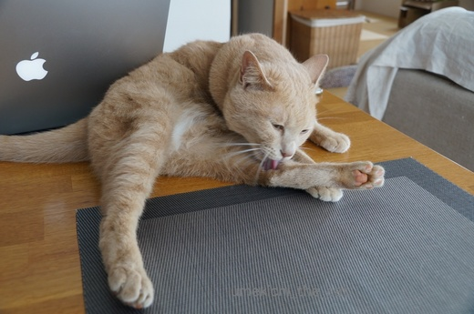
V字開脚で柔軟性を見せつけつつ後ろ足をべろべろべろべろ・・・
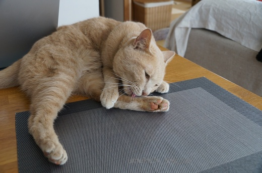
なんだか美味しそうだよね〜
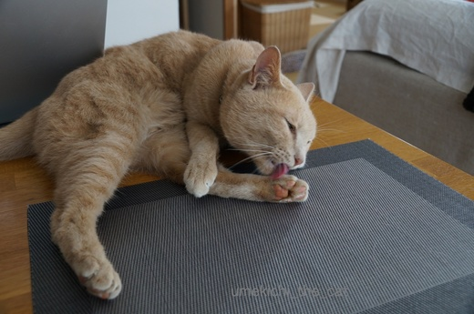
肉球も愛おしげにお手入れ。
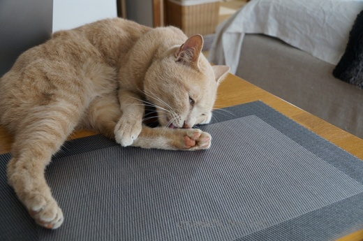
わ〜！白目になってますよ〜！！
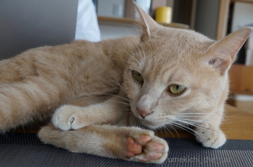
![[猫]](https://blog.ss-blog.jp/_images_e/101.gif) ふうっ、にくきゅうもきれいになったし
ふうっ、にくきゅうもきれいになったし
おひるねたいむやな。
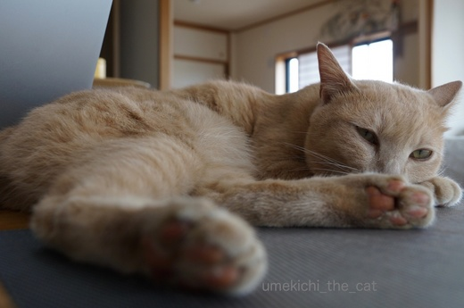
先日はエアコンを初稼働。店先には水ナス、鮎、鱧が並び始めました。夏！夏！
梅吉の寝場所も毛布の上からテーブル、キッチンカウンターの上、フローリングに変わり始めました。
そして何と言っても夏は白目の季節！
暑くなると梅吉の白目率がぐんと上昇します。
白目好きの皆様どうぞお楽しみに〜＾＾
 ↑ガブッと一押し↑
↑ガブッと一押し↑
普段はバルミューダのトースターを置いてあるのですが
退けるとすっぽりはまる梅吉さん。
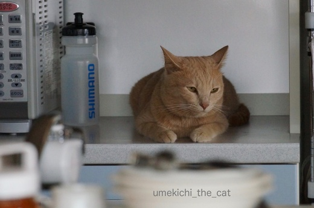
そこに寝ないでくださいよ〜。
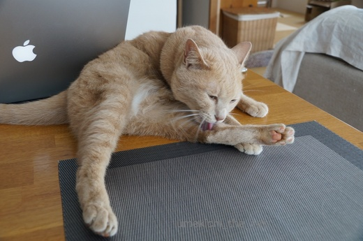
V字開脚で柔軟性を見せつけつつ後ろ足をべろべろべろべろ・・・
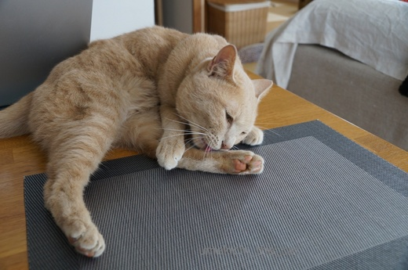
なんだか美味しそうだよね〜
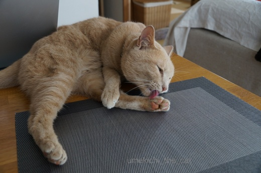
肉球も愛おしげにお手入れ。
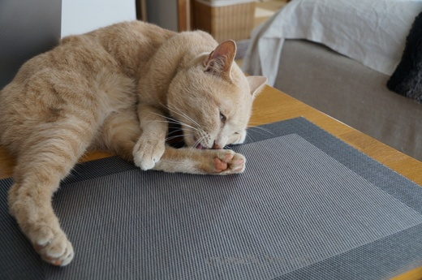
わ〜！白目になってますよ〜！！
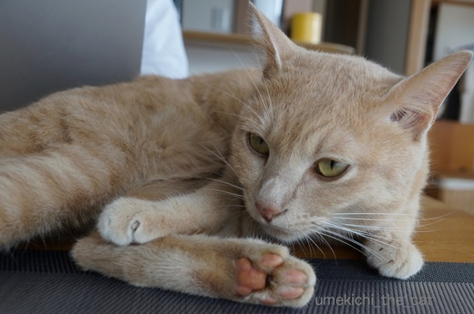
おひるねたいむやな。
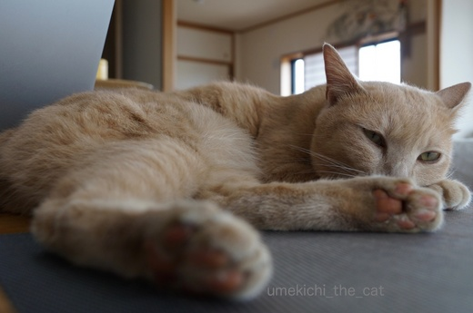
先日はエアコンを初稼働。店先には水ナス、鮎、鱧が並び始めました。夏！夏！
梅吉の寝場所も毛布の上からテーブル、キッチンカウンターの上、フローリングに変わり始めました。
そして何と言っても夏は白目の季節！
暑くなると梅吉の白目率がぐんと上昇します。
白目好きの皆様どうぞお楽しみに〜＾＾
普段はバルミューダのトースターを置いてあるのですが
退けるとすっぽりはまる梅吉さん。
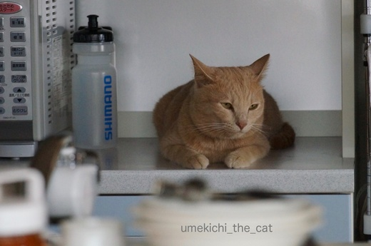
そこに寝ないでくださいよ〜。

カフェオレ色の梅吉

梅吉 2023年8月10日 永眠


梅吉と出会った譲渡会

犬猫の理由なき殺処分ゼロ
妄想広告
UMEKICHI 光

爆発的に早い！
時々攻撃的！
Thanks to Mr.Boss365
爆発的に早い！
時々攻撃的！
Thanks to Mr.Boss365

梅吉さんの満足げな鼻息が聞こえてきそうですね＾＾
ますますの白目に期待してます！
by じゅらまろ (2017-06-06 14:58)
毛づくろい終わった後に匂い嗅ぎたくなります。
猫ちゃんのよだれって匂いあるのかな？私ったら変態(*´∀｀)
by muku (2017-06-06 15:17)
うちはOKにした覚えはないけれど食事中にもテーブルに乗ってきます(T_T)
これから白目の季節なんですね！！大期待で待ってますよ(^.^)
by palpal (2017-06-06 15:18)
うちの大御所は床に落ちる頻度が高くなってますｗ
にゃんずが肉球を手入れしてる姿って美味しそうに見えますよねぇ(^O^)
いつか私もにゃんずの肉球を味わってみたいです(^-^)→あっ、私も変態ｗ
by ニッキー (2017-06-06 15:58)
肉球がポップコーンの匂いって言う人もいるけど確かにオイシそうに見えます。
う~んいい香りって白目向いちゃうの!?
トースター置き場は涼しい特等席ですね。
by zombiekong (2017-06-06 16:18)
そうでした、アイコン変えたのでした(忘れてた。
それは「誰？」ってなりますよね\(//∇//)\
梅吉君、にくきゅうでかいなあ∑(ﾟДﾟ)
もしかして指も長い…?洋猫さんも入ってたりするのかしら。
by BillK-ko (2017-06-06 17:48)
梅吉さんの毛づくろい
優雅で気持ちよさそうですね
しなやかな手足は バレリーナ〜の様です
もしかして 結構 美味しいのかな？
でも 気持ちがいいんだろうなー
梅吉さんの至福のひと時ですね
スピルリナ
成城石井 お恥ずかしながら 真っ先に手にとって見るのは スィーツです
やはり 女子は これには勝てませんよ
トホホホホ( ´Д`)y━･~~
by チャー (2017-06-06 19:06)
梅吉さん、心地良さそう。
ゆったりと毛づくろいする姿って癒されますよね。^^)
白目梅吉さん、期待してます！^^;
by yes_hama (2017-06-06 20:39)
今回も良いショットばかりです♪
夏になると白目率があがるのですね（笑
プニプニの肉球！！
触りたいです(#^.^#)
by きぃ (2017-06-06 21:06)
肉球さわってみたいな～ねこさんのは柔らかそう。ロッキーは外へ歩いているのでかなり堅いです。白目じっくりみてみたいです！
by みぃにゃん (2017-06-06 21:58)
棚や押し入れに隙間を作ったら負けですね～。
我が家では棚の中スカスカでも、最前列にものを並べて猛獣の侵入を防止しております^^;
白目の季節到来、どんなバリエーションを披露してくれるか楽しみです(*^▽^*)
by ゆきち (2017-06-06 22:05)
テーブルの上で一人舞台ですね。
体の柔らかいことったら、ないですね。
真似すると（できないけど）3日は歩けなさそうです。
夏は白目の季節なのですね。
楽しみですよ。
by kiki (2017-06-06 22:21)
白目好きとしては楽しみ楽しみ！
店先にハモがならぶなんて、やっぱりさすがだよーーー
あぅあぅ、おいしいハモ料理食べたい♪♪
by リュカ (2017-06-07 13:00)
ちいさん 県展にご来場いただいたんですか？ ありがとうございます。お会いしたかったなあ。
梅吉さんに似たうちの近所の茶太郎は寄る年波には勝てず、急に１キロやせてしまいました。この猫も元野良なんです。
by 暁烏 英（あけがらす ひで） (2017-06-07 19:00)
トースター置き場からママを見ていたかったのかなー。側にいたいんでしょうね♪
by Ginger (2017-06-08 12:56)
じゅらまろさん＞鼻息「ふんがぁ〜」って出してそうな顔してるでしょ。
そうなのよ、出してるのよー＾＾ついでにいびきもかくよww
mukuさん＞うふふ、毛づくろい後は湿っぽい、濡れたセーターみたいな匂いがしますよ(≧▽≦)
よだれ、というか猫毛のかほりかしら〜。
はい、毎日匂ってますww
palpalさん＞食事時、ナノくんは良いけど
きなこちゃんから食べ物ガードするの大変そうよ！！
梅雨入りして蒸し暑いせいか連日白目むいてますわww
ニッキーさん＞大御所様が床に落ちていたらぶつかったふりして
足でお腹をもふもふしちゃいたいです！！
にゃんこの肉球・・・私は毎日かほりを匂ってますよ(≧艸≦*)私も猫変態ww
zombiekongさん＞ポップコーンねぇ・・・香ばしいのは確かですよね(^_－)☆
私は毎日匂ってますよ〜、白目はむきませんけどねww
アイコン、ブレてますか？
ありきたりではない目立つアイコン、私は個性的で好きですよ＾＾
BillK-koさん＞マロマロアイコンも良いですね(≧▽≦)
変更されたのを忘れるくらいもう馴染んじゃいました・・・
でも、zombiekongさんがブレてるよ〜ww
梅吉の肉球、そう！そうなんだ〜！！
肉球は「丹波の黒豆」級にでかいなぁと思ってましたが
指、そう確かに長い。
バランス悪いし、コウモリの指みたいと思っていたのですが
「指が長い」の一言でストンと決着がついた気がします。ありがとー。
梅吉は手足長いし顔小さいし（羨ましいぞ！）洋猫の血が入っているのかも。
シンガプーラとか！？（←勝手に妄想が膨らんでマス
チャーさん＞毛づくろいの途中で足がぴーんってなる時は
ますますバレリーナみたいですよーww
時々私の顔も舐めてくれますがあんまり美味しそうな顔してませんっ^^;
チャーさんは真っ先に体に良いものコーナーに行く方だと思ってました〜＾＾
yes_hamaさん＞の〜んびり毛づくろいする様子を見ながら
「ショリショリ・・・」と毛づくろいの音を聞く・・・
穏やか〜な昼下がりでした＾＾
白目、お任せ下さい！！
きぃさん＞お褒めの言葉ありがとうございます！(^o^)
白目頑張りますがLeaちゃんにはかなわない気もしますよーww
梅吉の肉球は肉厚で弾力があってなかなかの触り心地なんですよ＾＾
by ちぃ (2017-06-08 15:50)
梅吉さん、念入りに毛繕いして、きれい好きですね～！
これから夏になると、白目になっちゃうのね（笑）ますます楽しみだわ～♡
バルミューダのトースターはどうですか？デザインも可愛いですよね！
by ミミハナ (2017-06-08 15:58)
みぃにゃんさん＞柔らかさは子猫時代にはかないませんが
なかなか弾力のある肉球ですよ＾＾
ロッキーくん肉球触らせてくれるんだ！
でも「むきっ」ってされそう(≧▽≦)（されたい・・・・）
ゆきちさん＞我が家はもう棚や押入れの隙間に侵入されるのは諦めております(=_=;)
押し入れは開けっ放し、棚に落ちて困るものは置かない・・・
日に日に飾りものは撤去され猫様仕様の家になってゆく( ；∀；)
梅吉二回めの夏を迎えますます白目に磨きをかけたい
かけて欲しいと思っていますww
kikiさん＞テーブルの上、冷蔵庫の上、いつでもどこでも梅吉一人舞台です＾＾
なんてったって我が家のアイドルですからーww
アイドルでも白目むいちゃいますよ！ご期待くださいませ！！
リュカさん＞あー！ハモの美味しさを知っている人は
「あぅあぅ」しちゃうよねーww
札幌で食べた時は「ゴム！」って思ったけど
大阪で食べるハモは柔らかくって風味豊か。美味しいよ〜♪
鍋や落とし（湯引きのこと関西の人はこう呼ぶの）も良いけど
フライが絶品だよ〜。うちに食べに来て〜＾＾
暁烏 英さん＞あああ、言葉足らずでごめんなさい(＞人＜;)
作品はブログで拝見させて頂きました。
実際に見に行きたかったなぁ・・・
茶太郎くんご高齢なのですね。
まだまだ元気でいて欲しいですよね。
Gingerさん＞梅吉はひっつき虫くっつき虫の甘えん坊なのは確かなんですが
この日は隣の電子レンジの中に避難していたかまぼこを狙っていた様子・・・
おかーさん、食べ物には負けます^^;
ミミハナさん＞梅吉はこう見えても毛づくろいは念入りにする
オシャレさんなんですよー。我が家のおされ番長＾＾
幼児期を過ぎたらしなくなるかな、と思っていた白目ですが
この夏も健在のようですよ。ご期待ください(^_－)☆
バルミューダ良いですよ〜。美味しいクロワッサンがさらに絶品になります！
角食だったら普通にスーパーで売っているのでも食感が変わります。
これでパンを温めるとね、ワインが進みすぎで困るのよ〜(*≧ｍ≦*)
by ちぃ (2017-06-08 17:47)